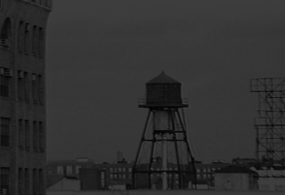

|
 Queensboro Ballads: News and UpdatesOctober 2000Well, the New York Mets are down two games against the Yankees in the Subway Series. I know it's looking rough. But Mets fans know all about fighting the odds. We've pulled off some amazing comebacks before -- check this one out. More Queensboro news: the new Paul Simon album is out! Let's go Mets. September 2000Time to fix the place up a little. Queensboro Ballads came out more than five years ago, and I still got lots of email about it. I'm glad that people care about it, and it's the least I can do to fix up some broken links 'n' stuff. I wish other parts of my life were as easy to fix as broken links. I've reported the sad news elsewhere within the LitKicks labyrinth that my marriage broke up in the autumn of 1999. As I reread the stories and essays that make up Queensboro Ballads today, I realize how much the entire work was about my marriage, and about the happiness it once brought me. Meg and I were going through some good years around the time this work came out. Our third (and last) child had just been born. We were feeling upbeat about our writing projects, meeting interesting new friends together, and doing cool things like putting on poetry readings. Somewhere between then and now we let our love affair slip away. The kids came first, and work came first, and our writing careers came first -- and then our relationship started moving suddenly down some bad roads, and neither of us were able to move fast enough to stop it. It's been a year now since we split up, and I'm still not exactly clear what to say about it. I'm working on finding the words. But as I reread these stories now, I remember how good things had sometimes been between us, and how much I loved her and will always love her. In that spirit I'm fixing up the site now, not as an exercise in ancient history but as a tribute to the complexities and paradoxes of love and marriage and divorce. I hope the good that was between us, and not the bad, is what lasts forever in our memories. October 1999Hey, I was going through some old photographs and look what I found. This is Flushing Meadows Park in 1964 during the World's Fair, and that's my Mom, my sister Sharon (aka Suzanne in 'The History of the California Burrito') and my brother Gary . I'm the chubby one in the middle -- I was two years old.
July 1999You all know I think Queens hiphop is the best hiphop in the world. My favorite rap album of all time is probably "Midnight Marauders" by A Tribe Called Quest (though this is followed closely by "Straight Outta Compton" and EPMD's "Strictly Business," straight outta suburban Long Island). Anyway, lately Queens hiphop is stronger than ever, but the action has shifted away from the Hollis/Jamaica axis that I wrote about back in '95. Now the good stuff is coming out of the Queensbridge neighborhood, next to the East River in Long Island City, halfway across the borough from where Run DMC and LL Cool J and Q-Tip and Phife Dawg hung out. If you want to visit the Queensbridge PJ's, just head for the Queensboro Bridge (that's why the projects are called 'Queensbridge', because they're right next to the bridge) and walk directly north. You'll see a few thugs standing around giving you nasty looks, but they'll leave you alone. A couple of my favorite tracks that come straight outta Queensbridge: "Illustrous" from Mobb Depp, and the meanest/nastiest hiphop song of the year "Hate Me Now" by Nas. You know any song with lyrics like "die motherfucker die motherfucker die" is going to play well in the car stereo with the windows closed ... December 1998Whoa ... I am pissed off. Donald Trump, who was born in Queens and should KNOW BETTER, just placed a blatant, shameless copy of the famous Flushing Meadows Park Unisphere (also known as "the Globe") in front of his dumb new Trump International Hotel and Tower on Columbus Circle in Manhattan. Check this out: I'm sorry, Donald, but that is not the Globe. It looks like the Globe, and even has the same electron rings spinning around the planet. But that is not the Globe, because the Globe belongs to the borough of Queens, and does not aspire to a fashionable address on Central Park South. This is the once and forever Globe, eternally funky and totally cool: And anything else is a pale and pathetic imitation. So there. September 1996After writing all about how great Flushing Meadows Park is last year, I was so busy working on other stuff this summer that I barely got to enjoy it. As the end of the summer rolled around, I rallied my brother to join me for one big day in the park with all the kids. Here are some pictures I took. March 1996Wow, thanks to Jason Chervokas and Tom Watson at the New York Times for writing this really nice and very complimentary article about Queensboro Ballads. So great to get such nice feedback on this thing! |